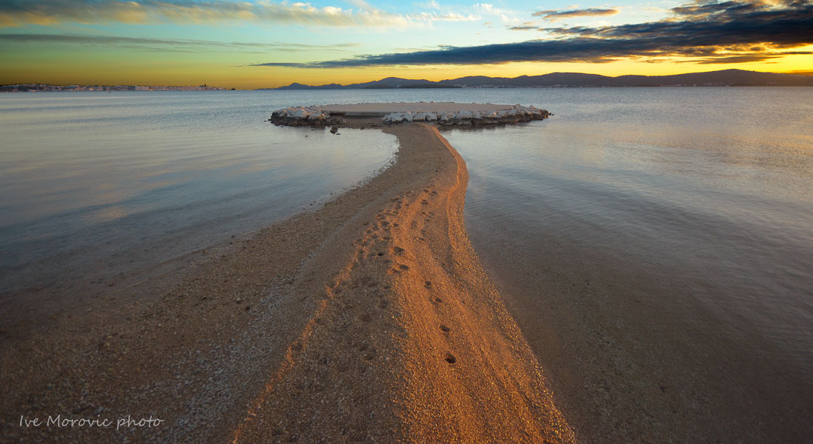
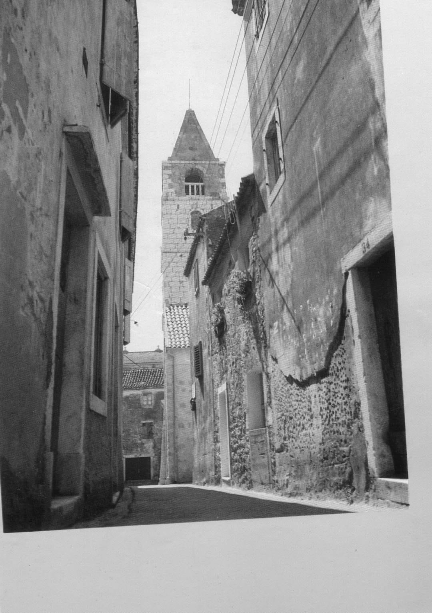
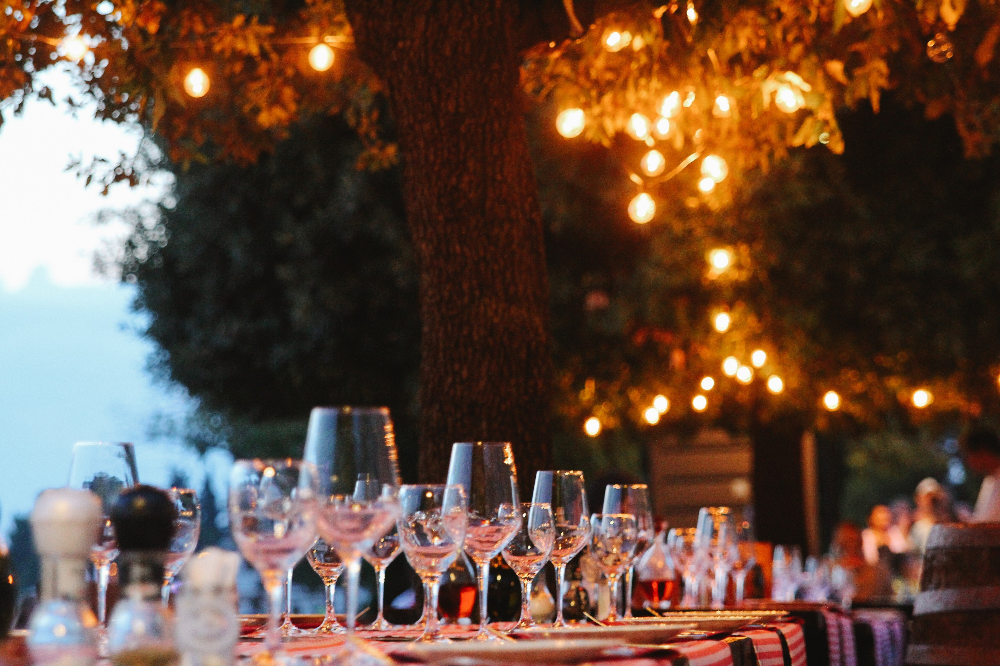

PrirodaPlaže i more
Bistre dalmatinske vode i uređene plaže idealne za obitelji i parove. Voda je čista i osvježavajuća cijelo ljeto.
Saznaj više →Dobrodošli u
Biser dalmatinske Rivijere – kristalno more, mirna šetnica i dalmatinska kuhinja kakva treba biti.
Istraži mjestoSveti Filip i Jakov smjestio se na obali Jadranskog mora između Zadra i Šibenika, svega nekoliko kilometara od Biograda na Moru. Poznat po mirnoj luci, dugačkim šljunčanim plažama i bogatoj ponudi svježe ribe, ovo je destinacija za one koji traže autentičnu Dalmaciju.
Mjestom dominira crkvica svetih Filipa i Jakova iz 15. stoljeća, a šetnica uz more nudi nezaboravne sumračne poglede prema otocima Pašmanu i Ugljan.

PrirodaBistre dalmatinske vode i uređene plaže idealne za obitelji i parove. Voda je čista i osvježavajuća cijelo ljeto.
Saznaj više →
KulturaProšetajte kamenim uličicama starog naselja i posjetite crkvu iz 15. stoljeća koja svjedoči bogatoj povijesti mjesta.
Saznaj više →
GastronomijaSvježa riba s gradela, prstaci, peka i domaće vino – dalmatinska gastronomija u svom punom sjaju.
Saznaj više →Sve što trebate znati o smještaju, prijevozu i lokalnim atrakcijama – na jednom mjestu.